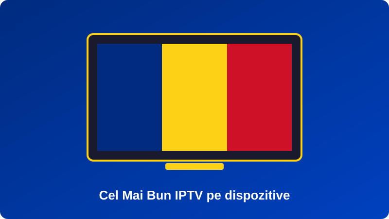

Daca ai ajuns aici, probabil cauti cel mai bun iptv si vrei un raspuns clar, nu o lista de promisiuni. Cand locuiesti departe de tara, televiziunea romaneasca devine o legatura reala cu acasa: jurnalul de seara, serialul preferat, un meci important sau emisiunea de weekend. Problema este ca oferta de pe piata este uriasa si, la prima vedere, toate serviciile par la fel.
In practica, diferentele apar abia seara, cand reteaua este aglomerata. Un serviciu ieftin poate merge perfect la pranz si se blocheaza exact la ora jurnalului. Altul are mii de canale, dar nu include posturile pe care le urmaresti. De aceea, alegerea pentru cel mai bun iptv trebuie facuta dupa criterii concrete: stabilitate, canale romanesti, ghid de programe, suport si compatibilitate cu aparatele tale.
In acest ghid explicam cum compari serviciile, cum testezi gratuit, ce aparate folosesti si ce greseli sa eviti. Echipa Romania IPTV lucreaza zilnic cu familii din Romania si din diaspora, asa ca recomandarile vin din situatii reale. Daca esti la inceput, citeste si ghidul despre iptv romania, apoi revino la criteriile de mai jos.
Cuprins
- Ce inseamna, de fapt, cel mai bun IPTV
- Criterii pentru a alege cel mai bun IPTV
- Canalele romanesti pe care ar trebui sa le gasesti
- Cum testezi un serviciu IPTV in 5 pasi
- Cel mai bun IPTV pentru romanii din diaspora
- Aplicatii si dispozitive recomandate
- Greseli frecvente cand cauti cel mai bun IPTV
- De ce aleg romanii Romania IPTV
- Intrebari frecvente
Ce inseamna, de fapt, cel mai bun IPTV
Expresia cel mai bun iptv nu are un raspuns universal, pentru ca nevoile difera. Un roman din Germania vrea jurnalul si serialele de seara, un suporter din Italia vrea meciuri fara blocaje, iar o familie din Spania vrea desene animate in romana pentru copii. Cel mai bun serviciu este cel care ii potriveste pe toti cei din casa, nu cel cu cea mai mare lista de canale.
Stabilitatea conteaza mai mult decat numarul de canale
Multe oferte promit mii de posturi, dar tu urmaresti zilnic cel mult 15-20. Un serviciu bun are mai putine canale, dar toate functionale, cu imagine curata si ghid de programe corect. Intreaba-te cate dintre ele vei folosi cu adevarat.
Suportul in limba romana
Cand ceva nu merge, vrei un om care te intelege si te ajuta pas cu pas. Suportul rapid pe WhatsApp, in romana, face diferenta intre o seara salvata si una pierduta.
Transparenta furnizorului
Un furnizor serios explica ce oferi, cum se activeaza accesul si ce se intampla daca apare o problema. Evita listele anonime, fara nume, fara test si fara raspunsuri clare.
Criterii pentru a alege cel mai bun IPTV
Ca sa nu alegi la intamplare, foloseste o lista scurta de criterii. Ele functioneaza indiferent de furnizor si te ajuta sa compari corect.
| Criteriu | Ce verifici | De ce conteaza |
|---|---|---|
| Stabilitate | Imagine fara blocaje seara | Se vede in orele de varf |
| Canale romanesti | Generaliste, stiri, sport, copii | Esenta pentru diaspora |
| Ghid EPG | Ore si emisiuni corecte | Planifici usor seara |
| Suport | Raspuns rapid in romana | Rezolvi repede problemele |
| Test gratuit | Fara card si fara contract | Verifici inainte sa platesti |
Calitatea imaginii si a sunetului
Verifica daca imaginea este clara pe televizorul tau, nu doar pe telefon. Atentie la sunetul sincronizat cu imaginea si la subtitrari, mai ales la filme.
Compatibilitatea cu aparatele tale
Serviciul trebuie sa mearga pe ce ai deja: Smart TV, Android TV Box, Fire TV Stick, telefon sau computer. Daca ai nevoie de aplicatie speciala, cere indicatii inainte de plata.
Pretul raportat la ce primesti
Cel mai ieftin nu inseamna cel mai bun. Un abonament mic poate ascunde servere aglomerate si lipsa suportului. Compara pretul cu stabilitatea si cu ajutorul pe care il primesti. Detalii despre costuri gasesti in ghidul best iptv.
Canalele romanesti pe care ar trebui sa le gasesti
Pentru publicul din Romania si din diaspora, oferta de canale este criteriul numarul unu. Un serviciu care se numeste cel mai bun iptv, dar nu include posturile tale preferate, nu merita banii.
Generaliste si stiri
Pro TV, Antena 1, Kanal D, Prima TV, Digi24, Antena 3 CNN si alte posturi mari trebuie sa fie disponibile in HD, cu ghid de programe. Verifica ce se intampla cand se aduna multi spectatori, de exemplu la alegeri sau la evenimente importante. Lista completa pe categorii o gasesti in canale tv romanesti iptv.
Sport, filme si seriale
Meciurile live sunt testul de foc. Un serviciu bun pastreaza imaginea fluida si in minutele importante. Filmele si serialele completeaza oferta, iar canalele tematice te scot din rutina.
Desene animate si programe pentru copii
Pentru familiile cu copii mici, desenele animate in limba romana ajuta la pastrarea limbii. Foloseste lista de favorite ca cei mici sa gaseasca singuri ce le place. Daca vrei si o privire de ansamblu asupra posturilor, citeste canale romanesti iptv.
Cum testezi un serviciu IPTV in 5 pasi
Nu exista alta metoda sigura de a afla care este cel mai bun serviciu decat sa-l incerci pe reteaua si pe televizorul tau. Iata un plan simplu.
- Cere un test gratuit si foloseste-l cel putin o seara completa.
- Urmareste cinci canale diferite intre 19:00 si 23:00, cand reteaua este aglomerata.
- Verifica ghidul de programe: orele si emisiunile sunt corecte?
- Schimba rapid intre canale si noteaza cat dureaza pornirea.
- Scrie suportului si observa cat de repede primesti un raspuns clar.
Ce faci dupa test
Noteaza ce a mers bine si ce a deranjat. Daca nu ai avut blocaje in cele cinci seri si suportul a raspuns repede, ai gasit un candidat serios. Daca nu, mai ai timp sa compari fara sa pierzi bani.
Semnale de alarma
Fii precaut la promisiuni exagerate, la plati prin metode neclare sau la lipsa totala a suportului. Pentru comparatie poti vedea cum functioneaza servicii pentru alte comunitati, de exemplu greek iptv sau tilaa iptv.
Cel mai bun IPTV pentru romanii din diaspora
Daca locuiesti in strainatate, nevoile sunt putin diferite. Operatorul local nu are posturi romanesti, iar parabola nu este mereu permisa in bloc. IPTV rezolva problema, pentru ca oferta nu depinde de adresa ta, ci doar de conexiunea la internet.
Fusul orar si redarea din arhiva
Diferenta de ora fata de Romania poate deranja. Ghidul afiseaza ora locala, iar daca exista redare din arhiva poti vedea emisiunea mai tarziu. Mai multe detalii despre acest subiect gasesti in iptv romania diaspora.
Acelasi serviciu in orice tara
Fie ca esti in Germania, Italia, Spania, Marea Britanie, Belgia sau Franta, aplicatia functioneaza la fel. Conteaza viteza: aproximativ 10 Mbps pentru HD si 25 Mbps pentru 4K.
Toata familia, pe mai multe ecrane
Verifica la cate dispozitive poti folosi accesul. Parintii pot urmari jurnalul pe televizor, iar copiii desenele pe tableta, fara disputa pe telecomanda.

O seara obisnuita intr-o familie din diaspora
Dupa scoala, copiii pornesc desenele animate in romana, apoi parintii urmaresc jurnalul si un serial. In weekend vine randul meciului sau al unui film. Toate vin din aceeasi aplicatie, fara receptoare suplimentare si fara cabluri in plus.
Aplicatii si dispozitive recomandate
Serviciul bun trebuie sa ruleze pe aparate obisnuite, nu pe echipamente rare si scumpe. Alegerea depinde de ce ai deja acasa.
Smart TV, Android TV Box si Fire TV Stick
Un Smart TV recent poate rula direct aplicatia. Pentru televizoarele mai vechi, un Android TV Box sau un Fire TV Stick rezolva problema la cost mic. Boxul ofera de obicei performanta mai buna si actualizari simple.
Telefon, tableta si computer
Pe telefon si tableta instalezi aplicatia din magazinul oficial sau dintr-un fisier primit de la furnizor. Pe computer folosesti un player compatibil cu liste M3U. Pentru detalii despre playere, vezi si best iptv player.
Wi-Fi sau cablu Ethernet
Daca imaginea se blocheaza, verifica mai intai reteaua. Un cablu Ethernet, un router mai aproape sau o banda mai putin aglomerata rezolva multe probleme inainte sa dai vina pe serviciu.
Greseli frecvente cand cauti cel mai bun IPTV
Majoritatea nemultumirilor vin din aceleasi cauze. Le eviti daca le cunosti dinainte.
Alegerea doar dupa pret
Un pret foarte mic ascunde de obicei servere aglomerate si lipsa suportului. Compara dupa test, nu doar dupa suma de pe pagina.
Folosirea listelor gratuite necunoscute
Listele gratuite de pe internet sunt instabile, pot avea reclame agresive sau fisiere dubioase. Pentru uz zilnic, un serviciu cu suport ramane alegerea sigura. Citeste si canale iptv romanesti gratis.
Sarirea peste testul gratuit
Multi platesc direct. Testul costa cateva minute si iti arata exact cum se comporta serviciul pe reteaua ta.
Ignorarea suportului
Cand apare o problema, conteaza sa gasesti pe cineva care raspunde in romana. Echipa Romania IPTV raspunde pe WhatsApp si ajuta la instalare pas cu pas.
Lipsa actualizarilor
Aplicatiile se actualizeaza, iar canalele se pot schimba. Alege un furnizor care te anunta din timp si care corecteaza rapid orice defectiune.
De ce aleg romanii Romania IPTV
Daca vrei un serviciu gandit pentru publicul vorbitor de romana, Romania IPTV pune accent pe ce conteaza zilnic: canale romanesti, imagine stabila, ghid de programe si ajutor in limba ta.
Test gratuit, fara card
Poti incerca serviciul inainte sa te hotarasti. Scrii pe WhatsApp, primesti accesul si decizi dupa ce l-ai vazut pe televizorul tau.
Instalare ghidata
Echipa te ajuta sa instalezi aplicatia pe aparatul tau si sa-ti configurezi favoritele. Instalarea dureaza de obicei doar cateva minute, chiar daca nu esti obisnuit cu tehnologia.
Ghid complet pentru incepatori
Daca esti la inceput, citeste mai intai articolul iptv romania, apoi reia criteriile de mai sus si compara. Astfel alegi in cunostinta de cauza, nu dupa reclame.
Vrei sa testezi fara risc?
Scrie-ne pe WhatsApp si primesti un test gratuit cu Romania IPTV: fara card, fara contract, cu suport in limba romana.
Cere test gratuit pe WhatsAppIntrebari frecvente
Care este cel mai bun iptv pentru canale romanesti?
Cel mai bun este serviciul care are posturile tale preferate, imagine stabila seara, ghid de programe corect si suport in romana. Testul gratuit te ajuta sa verifici toate acestea.
Cum recunosc un serviciu IPTV bun?
Are test gratuit, conditii clare, suport rapid, canale in HD si functioneaza fara blocaje in orele de varf, intre 19:00 si 23:00.
Ce viteza de internet am nevoie?
Aproximativ 10 Mbps pentru HD si 25 Mbps pentru 4K. Un cablu Ethernet este mai stabil decat Wi-Fi-ul, mai ales seara.
Pot folosi IPTV din strainatate?
Da. Serviciul merge in Germania, Italia, Spania, Marea Britanie, Belgia, Franta si alte tari, atat timp cat ai internet stabil.
Pe ce aparate merge?
Pe Smart TV, Android TV Box, Fire TV Stick, Apple TV, telefon, tableta si computer, prin aplicatii compatibile cu liste M3U sau Xtream.
Cum primesc un test gratuit?
Scrie pe WhatsApp echipei Romania IPTV, primesti datele de acces si instalezi aplicatia. Pentru test nu se cere card bancar.
Este legal sa folosesc IPTV?
Tehnologia IPTV este legala. Important este sa alegi furnizori transparenti, cu conditii clare si suport, nu liste anonime de pe internet.
De ce nu merita listele gratuite?
Au servere aglomerate, nu au ghid de programe si nu ofera suport. Pentru vizionare zilnica, un serviciu cu test si asistenta este mai sigur.
Concluzie
Alegerea pentru cel mai bun iptv inseamna sa privesti stabilitatea, canalele romanesti, ghidul de programe, suportul si compatibilitatea cu aparatele tale, nu doar pretul sau numarul de posturi. Cere un test, urmareste cateva canale in orele de varf si decide dupa rezultat. Astfel ai televiziunea romaneasca acasa, oriunde in lume.
Pentru mai multe informatii, citeste ghidul iptv romania, apoi scrie-ne pe WhatsApp si porneste-ti canalele preferate cu Romania IPTV.
Citeste in continuare: canale iptv romanesti gratis, canale tv romanesti iptv si canale romanesti iptv.